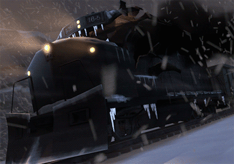

—————————————————————————————————-
CLICK HERE TO SEE IT AT NOT BUTT QUALITY
http://steamcommunity.com/sharedfiles/filedetails/?id=230065711
—————————————————————————————————-
As promised!
I’m a bit late though so I apologise. I’ve had a lot on my plate recently.
So this is our custom train for the full End of the Line release (The train in the trailer was temporary) This new one has over 100 points of articulation. Not all visible in this gif mind you. But it will make sense when you see the final movie. Note things like the functional suspension .
A big shout out to rebbacus who put a lot of work into this asset and did some magical things with springs.
Until next time.